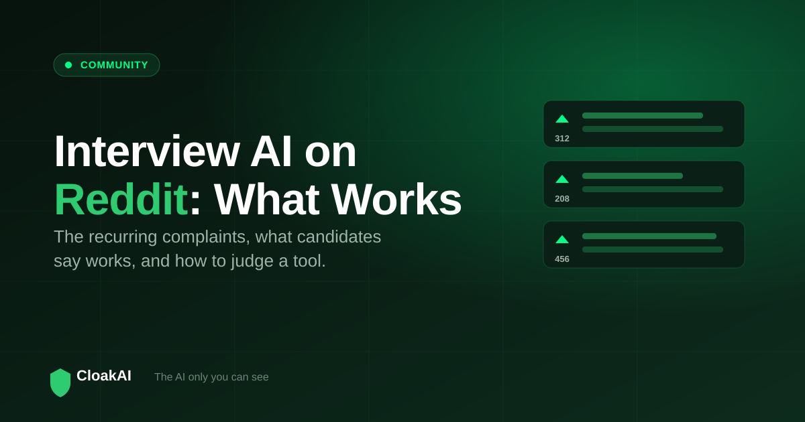
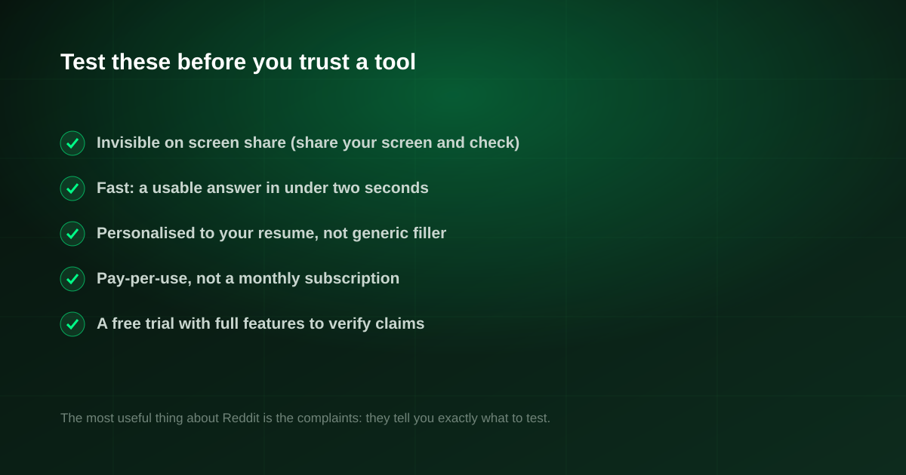

When people want the truth about a tool, they add "reddit" to the search, and interview AI is no exception. Threads about an AI interview assistant on Reddit are full of strong opinions, a few recurring complaints, and the occasional tool people quietly say actually works. This guide distils what those discussions keep coming back to, so you can judge any interview AI, including CloakAI, on the criteria that real users care about.
Across Reddit, the same themes repeat: tools that get seen on screen share are useless, subscriptions feel overpriced, and latency kills the experience. The tools people say actually work are native, fast, and invisible. CloakAI is built around those exact criteria, and its free 20-minute trial lets you verify the claims yourself instead of trusting a thread.
What Reddit Keeps Complaining About
Read enough threads and the same frustrations come up again and again. These are the real failure modes, straight from the criticism:
- "It showed up on my screen share." The number one complaint. Browser-based tools get captured, and people find out at the worst possible moment.
- "Too expensive for what it is." Monthly Western subscriptions feel steep for a few interviews, especially outside the US.
- "The lag made it useless." If the answer arrives after you have already stumbled, it does not help.
- "Generic answers." Suggestions that ignore your resume sound robotic and are easy for interviewers to spot.
What Redditors Say Actually Works
The flip side of those complaints is a checklist of what a good tool looks like, and it is remarkably consistent:
- Native, not browser. People who stopped getting caught almost always switched to a native app that hides at the OS level.
- Fast. Sub-two-second answers are the difference between useful and pointless.
- Personalised. Answers tied to your resume sound like you, which is what keeps them believable.
- Pay for what you use. Candidates prefer buying a few hours over committing to a subscription they will cancel next month.

New here? Try every feature free for 20 minutes, no signup and no card needed.
Try CloakAI for free 20-minute free trial · No credit card required · Windows 10 & 11How CloakAI Maps to the Reddit Checklist
| What Reddit wants | Many tools | CloakAI |
|---|---|---|
| Invisible on screen share | ✗ Browser | ✓ Native, content protection |
| Low latency answers | ⚠ | ✓ Real-time |
| Personalised to your resume | ⚠ | ✓ Deep |
| No monthly subscription | ✗ | ✓ From ₹499 |
| Free way to verify claims | ⚠ | ✓ 20 min full |
| Built for the Indian market | ✗ USD | ✓ INR / UPI |
The most useful thing about Reddit is not the recommendations, it is the complaints. They tell you exactly what to test before you trust a tool: share your screen, time the answer, and check it sounds like you.
Not ready to buy? Test every one of those features free for 20 minutes first.
Try CloakAI for free 20-minute free trial · No credit card required · Windows 10 & 11How to Judge Any Interview AI Yourself
Do not take a thread's word for it, and do not take ours either. Run the same three tests Reddit implicitly recommends:
- The screen-share test. Start a call, share your screen, and confirm the assistant does not appear in the shared view.
- The latency test. Ask a question and count the seconds until a usable answer appears. Under two is good.
- The "sounds like me" test. Load your resume and check the answers use your real experience, not generic filler.
A free trial with full features is the only honest way to run these tests, which is why one matters so much.
Final Verdict
Reddit is a good bar to hold interview AI to, because its complaints are specific and its praise is hard-won. The tools that survive that scrutiny are native, fast, personalised, invisible on screen share, and fairly priced. CloakAI is built for that checklist and lets you verify every point in a free 20-minute trial. Test it against the Reddit criteria yourself, then decide.
Line it up for your next interview and try the whole thing free for 20 minutes.
Try CloakAI for free 20-minute free trial · No credit card required · Windows 10 & 11